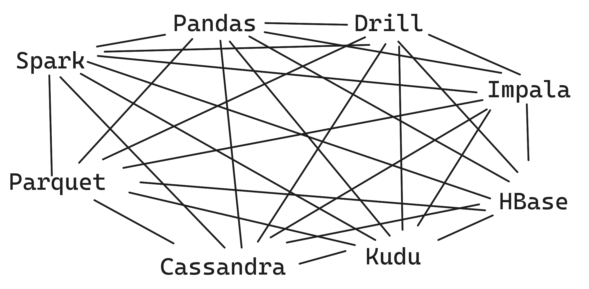

library(arrow)
library(dplyr)
pums_person <- open_dataset("./data/person")
subway_riders <- pums_person |>
filter(year == 2021, grepl("Subway|Light rail", JWTRNS)) |>
summarize(n = sum(PWGTP)) |>
collect()2 Introduction
2.1 The problem of larger-than-memory data
Those of us who love working in the R programming language know how well suited it is for data analysis. R is great for working with tabular data, which is a first class citizen in R, with a data frame API being an inherent part of the language. There is also a vast ecosystem of packages that implement statistical methods and other useful functionality, and various deeply enthusiastic communities have grown up around the language.
R also allows the creation of novel, expressive user experiences for data analysis. With non-standard evaluation (NSE), it is possible to design APIs through which users can type intuitive code that gets translated into what is needed to do complex computations. Notably, the dplyr package defines a “grammar of data manipulation” that allows users to write code that is both easy to read and write. dplyr helped make R accessible to an even wider audience, and has inspired innovation in other languages as well.
However, as you start to work with larger datasets, you start to run into R’s inherent limitations. R data frames are stored in memory, so the maximum amount of data which can be worked with at once is constrained by the total amount of memory on the machine running the code. R is also single-threaded, so it can’t take advantage of modern multi-core processors. Even if you can fit the data into memory, you may find that your code is running too slowly to be useful.
Some options for speeding up R come with undesirable tradeoffs. You can rewrite your code to use libraries that parallelize operations, such as parallel or future. This solves the single-threaded problem, but they can significantly increase the complexity of the required code. You can also use a package like data.table, which is optimized for speed, but it also requires you to learn a different code syntax. Even so, these alternatives still work on data that fits in memory, so if your data is too large, you’re out of luck.
Other options bring extra overhead. You could use a database or other remote service to store your data, and then use R to query it. This solves the scalability problem, but it brings lots of extra costs: a database or cluster requires setup, configuration, and ongoing maintenance. In a professional setting, this could require asking for IT to get involved, adding additional challenges. There may also be additional monetary costs associated with the required infrastructure and time spent supporting it.
Sometimes, a database is the right solution. But many times, your laptop or workstation should be able to handle the data you’re working with. Modern processors are quite powerful, and disk storage is increasingly cheap. What would be ideal is a way to work with data that is larger than memory, while continuing to use familiar dplyr syntax right on our own machines.
2.2 The arrow R package
As we will show in this book, the arrow R package gives you that ideal. It allows you to work with larger-than-memory data directly from R without needing to set up additional infrastructure. It implements the dplyr API, which means that if you are familiar with dplyr functions, you can use those same functions with arrow and don’t have to learn a whole new framework.
Using arrow, you can work directly with files in formats such as CSV and Parquet—a format optimized for reducing the size of files and doing fast data analysis, which we’ll discuss in Chapter 5—without having to export this data into a different format first. Just point at a directory of files, write dplyr code against it, and when it runs, it scans through the data in chunks, doing computations without having to ever hold the whole dataset in memory at once.
Let’s start with a quick example of querying a large dataset with arrow and dplyr. Don’t worry too much about what the dataset is or how it works—we will explain that throughout this book. Just know that it is over 53 million rows and 311 columns of United States Census data spanning 17 years, split into 884 separate files that total around 90GB when written as CSV.
How many people rode a subway or light rail as their commute to work in 2021? And how long does it take to query the whole dataset?
The answer is that 1.5 million people ride subways—and all of that about a second!
But there’s actually much more to arrow than shrinking your big data problems. As we will see in the second part of the book, Arrow makes it easy and efficient to query data in cloud storage, such as Amazon S3 and Google Cloud Storage. It makes it fast to integrate with other query engines and databases, like Spark and DuckDB. And it facilitates collaboration across other languages and tools.
How does arrow solve R’s larger-than-memory data problems? And why does it make it easier to plug different tools and systems together efficiently?
The arrow R package is part of the broader Apache Arrow project. To understand how all of this fits together, we need to take a step back and explore the Arrow project’s origins and goals. If you’re only interested in knowing about how to get analysis tasks done with arrow, that’s totally fine, and we recommend skipping ahead to Chapter 3, which provides you with a practical overview of working with the arrow R package.
arrow vs Arrow
Sometimes people mean different things when they say “Arrow”, so in this book, we use “arrow” or “the arrow R package” to refer specifically to the R package, and “Arrow” with a capital-A to refer to the Apache Arrow project as a whole.
2.3 The Apache Arrow project
The Arrow project began in 2015 as a collboration between the maintainers of a number of big-data projects. Since that time, it has gained a much wider community of contributors. At the time of writing, over one thousand unique individuals have contributed to Arrow. Arrow exists under the umbrella of the Apache Software Foundation and is governed by its core maintainers, who work for many different companies: no one person or corporation controls it.
From the beginning, the main goals of the Arrow project were to:
- create an efficient columnar format for representing data in-memory, optimised for analytical workflows
- establish this format as a standard, which if widely adopted would enable greater interoperability between different programming languages and systems
- advance innovation by creating a solid basis on which to build other technologies and reduce the need for duplicated effort
At its core, Arrow is a specification for how data should be laid out in memory. The project maintains implementations of that format in twelve languages, as well as additional libraries that provide useful functionality on top of Arrow memory. The arrow R package is one of those, which wraps Arrow C++ libraries that implement a query engine, file systems, and more. Outside of the Arrow project itself, scores of other projects use the Arrow format and libraries, forming an ecosystem of tools that can work together efficiently.
Why invest in establishing a standard? Why focus on low-level details like bits in memory? It would have been much easier to just write a faster data frame library, without worrying about how it fit with other tools.
The focus on standards comes from the origins of the project, grounded in the challenges and inefficiencies in the analytics landscape a decade ago. By the mid-2010s, many technologies for analytic workflows had emerged, all solving related problems but in different ways. For example, both R and Python had tools for working with data frames, but the underlying data structures and methods are not exactly the same. They are different enough that a library written for R data frames can’t just be used on a data frame in pandas, the popular Python library. It was hard to use R and Python together on the same data. Moreover, developers working to improve the capabilities of their language were duplicating efforts.
Beyond data frame libraries, there also was a proliferation of Big Data tools. Projects like Apache Spark, Impala, and Drill built on the previous generation’s tech stack, notably Hadoop and HDFS, and greatly improved the scalability and performance of analytic workloads. These technologies brought a huge number of benefits to their users, but the landscape was fragmented. No single tool solves every problem the best, and each implemented their internals differently.
As long as you stay within one tool, everything is fine, but this is often not possible. For example, you may run a query in Spark, but Spark doesn’t have all of the statistical methods available in R or Python. So you have to take data out of Spark, move it across the network to your machine, translate it to the R or pandas format, do work on it, and potentially send it back to Spark for further work.
For developers, this is costly. We need special adapter code to map the data structures from one project to the other. And you have to do that special for every project you want to exchange with.

Even once those technical challenges are solved, there are performance costs at runtime. Converting data between formats takes processing time, and it can lose some details in translation.
Facing this scenario, developers from several of these projects came together and asked: can we define a standard for representing columnar data, such that each project only needs to implement that? Having that standard saves on engineering effort because there’s just one adapter to write.
But in order to get the most savings, you also need to minimize the translation overhead. Ideally, the standard format would be exactly what every analytic project uses internally—then there is no translation. In practice, different databases and query engines make design tradeoffs to optimize for some use cases over others. So the goal of the standard is to be a common denominator, designed for general analytic workloads. This makes it close to what most existing projects were already using, and desirable for future projects to adopt from the beginning.
What does that entail for the Arrow format? First, Arrow is columnar, like R, pandas, and most modern query engines. Many traditional databases and common formats for storing tabular data, such as CSVs, are row-oriented, which means that data is stored one row at a time, so values in memory would be taken from left-to-right and then top-to-bottom in the table below This format is great for transactional workflows, where entire rows are being retrieved or updated, or extra rows are being appended to the data. However, it’s less well suited for analytic workflows involving data manipulation, where we want to select a subset of columns, and perform operations like aggregated summaries.
Analytic workflows are better handled by column-oriented formats. What this means is that values from the same column are stored in sequential areas in memory, so values from a table would be stored top-to-bottom and then left-to-right. The result of this is that when the data manipulation task involved retrieving values from a single column, the entire sequential area of memory can be read, which will be faster than making non-sequential reads.
The Arrow specification is a columnar format, and so is optimized for analytical workflows. Furthermore, implementation choices in the memory layout are optimized for fast evaluation and aggregation. For example, missing data is represented as a bitmask for all data types, unlike R, pandas, and NumPy, which use sentinel values that vary by type. Filtering by missing values, or checking if values are missing, is faster using bitmasks.1 The Arrow string array is also represented in a way that improves the efficiency and speed of access relative to R and Python.2
Second, Arrow has a rich type system, encompassing all key data structures found across the database landscape, including many types not natively supported in R.3 Bringing together the type system with the columnar data layout, we get the Arrow specification. Reducing it to its core, Arrow defines Arrays, columns of data of the same type. A data-frame-like arrangement of Arrays of equal length is a RecordBatch, which has a Schema that maps column names to the corresponding data types.
Libraries can then define additional abstractions on top of those core structures. For example, in C++ (and thus the R package) we have a Table, which can be thought of as a data frame that is chunked into multiple batches, and a RecordBatchReader, an iterator that yields RecordBatches for processing. A Dataset makes a connection to a data source, such as a file or directory of files, and provides an interface to yielding batches of data efficiently. These are the core building blocks on which high-performance data-frame libraries and query engines can be built.
The early years of the Arrow project were focused on developing the specification and building out basic implementations in multiple languages that projects could use to get data into and out of the Arrow format. The first significant proof of the value of Arrow as a standard came in 2017 with the integration between Spark (a Java project) and pandas via PySpark (using the Python bindings to the Arrow C++ library). As we will discuss further in Chapter 9, using Arrow to exchange data demonstrated significant speedups in workflows that involved Spark and pandas together.
After the initial foundations were built, projects both inside Apache Arrow and in the broader community began building Arrow-native solutions. That is, Arrow wasn’t just the means of exchanging data with others: it was the memory model on the inside. No translation is required when communicating between Arrow-native projects because their internal data layout is the same.
One such project is the query engine in the Arrow C++ library, called Acero. This is what powers the dplyr backend in the arrow R package, and we will spend a few chapters digging into its capabilities. We—the authors, along with others in the Arrow developer community—wanted to build a solution to the problems outlined at the top of the chapter. And we wanted to build something that demonstrated the value of the design choices in the Arrow format. If Arrow is a memory format for data that is optimal for analytic workloads, we should be able to build a high-performance query engine on top of it. And if Arrow makes integrations with other projects more efficient, we should be able to plug this query engine into other tools naturally.
The influence of Arrow goes beyond the specifics of this C++ library, though. Another project that grew within Apache Arrow is DataFusion, an Arrow-native query engine written in Rust. Other projects, like the polars data frame library, are built on Arrow but are governed independently. Still others, such as DuckDB, have an internal format that is nearly the same as Arrow, but with some different trade-offs chosen. Projects like DuckDB are sufficiently similar in their implementations that it is possible to integrate them with Arrow with minimal effort so that data can be shared between Arrow and each of them without the need for costly copying back and forth This translation cost is known as serialization and deserialization.
The Arrow format and specification is a key tool in the broader drive to create composable analytic systems. In a composable system, you can plug together different components that best meet your needs, rather than having to adopt closed products that include everything, from the storage layer to compute methods and the front-end user experience. Standards like Arrow allow you to integrate different solutions, such as DuckDB and DataFusion, that may be better at one thing or another, without the overhead of having to translate between proprietary data formats. As such, the value of Arrow in R goes beyond the specific capabilities of the arrow R package, with the ideas and philosophy being in some ways more important than the specific implementations themselves.
2.4 This book
In Chapter 3, we give an overview of working with arrow, and introduce some key ideas and concepts that you’ll need to know. Then in Chapter 4 we look at what you need to know about manipulating data using arrow, and how most of the time you can work with functionality identical to that of the dplyr package.
The format of the data you’re working with can have a big impact on how efficiently you can analyze your data, and so in Chapter 5, we explore the different file formats that you can work with in arrow and explain the crucial differences between them. Beyond choosing a good file format, we will demonstrate some specific techniques to optimize working with larger-than-memory datasets, which we discuss in Chapter 6. We extend the lessons we learned earlier about datasets, and discuss working with data in cloud storage and specifically how arrow can help with this, in Chapter 7. Not only will you learn how to connect with data in cloud storage, you will also see how to query it optimally.
We go on to talk about more sophisticated techniques for data analysis, including user-defined functions and extending arrow to work with geospatial data, in Chapter 8. Finally, we take a look at sharing data within the same process, between processes, and across networks in Chapter 9.
This blog post by Danielle Navarro provides an accessible explanation of the Arrow string data type.↩︎
See Appendix A.2.2 for full list of types and how they map to R types.↩︎